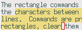
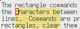

Contents
输入特殊字符
按 C-x 8 R 可以输入 ® ，按 C-x 8 o 可以输入 ° ，等等。按 C-x 8 C-h 可
以得到一份完整的列表。
补全输入
按 M-<TAB> 可以进行补全，不过，通常 M-<TAB> 被绑定到窗口管理器的遍历窗
口的功能上，这个时候可以使用 C-M-i 或者 <ESC> <TAB> 来代替。还有另外一
个办法，因为 Emacs 使用的是 Meta 键，他通常被绑定到 Alt 键，而窗口管理
器则明确地使用 Alt 键，所以，只要把 Emacs 里的 Meta 键绑定到其他键比如
Win 键上就不会冲突了(不过 Win 键的位置不如 Alt 按着方便，哈哈！)。
rot13
rot13 是一种很简单的凯撒位移加密方法，普遍用于各种迷题后面所附的答案等 的加密上，目的是让你并不能一下子“不小心”看到了答案，同时又让你在需要知 道答案的时候能够方便地进行解密。
rot13 的加密和解密的方法都非常简单，就是把每个字母往后移动 13 个即可。
因为刚好二十六个字母，所以加密和解密都使用同样的方法。虽然也可以采用手
工加解密的方法，但是自动完成通常更方便。在 UNIX 系统上，可以直接用
tr 实用程序来完成这个工作：
tr A-Za-z N-ZA-Mn-za-m
大多数新闻阅读器都带有自动加解密的功能，Emacs 也有一个 rot13-region 的
命令可以方便地使用。
不过，当然，这种只对英文字母进行转换的加密，对于中文来说没有任何作用呢。
查看单个 info 文档
有时候下载的一些软件包里面有 foo.info 文件，本来安装之后可以查看的，但
是有时后想在不安装的情况下临时看一看。在终端下面用 info -f foo.info 就
可以看了，在 Emacs 里面可以通过 C-u C-h i 来指定要打开的 info 文档。
矩形操作
在 Emacs 里面可以进行方便的矩形操作，复制、剪切、粘贴以及一个矩形块等。 Emacs 里面的矩形块一开始看上去也许不太直观，其实熟悉之后是很简单的，上 下和左右边界都分别有 pointer 和 mark 限制起来的就是一个矩形，如图：

如果不习惯，可以使用 rect-mark.el ，它可以直观地把矩形显示出来。例如，
上面的这个区域，使用 rect-mark.el 的 rm-exchange-point-and-mark 命令
(作为和绑定到 C-x C-x 的 exchange-point-and-mark 对应起来，我们可以把
他绑定到 C-x r C-x 上)把他变成一个直观的矩形区域：

还可以使用 rm-set-mark 命令标记 mark 然后随着光标移动动态显示出来当前
的矩形块。不过熟悉之后，就几乎不会用到这个东西了。
DontZap
这个事故发生在几乎所有 X 下的 Emacs 的用户身上，如果在你身上发生了这个 事故，那么，恭喜你，这是一个里程碑，从这里开始，你已经对 Emacs 的常用 快捷键有一定的熟练程度了，而且你已经习惯了 Emacs 的思维方式，懂得自己 猜测可能的快捷键了。幸运的是，在使用了一年的 Emacs 之后，我自己也终于 达到了这个里程碑。
在 Emacs 里，我们用 <backspace> 来删除一个字符，用 <C-backspace> 来删除
一个词，用 C-x <backspace> 来删除一个句子，如果你足够聪明，你应该想到，
用 <C-M-backspace> 来删除一个 s-expression 吧？没错，我今天
(2006-10-05) 就聪明了一次，然后我的屏幕一下子就黑了……是的，Xorg 捕获了
这个命令，然后直接退出了，所有的 X 下的程序被强制关闭……
我在 freecity 抱怨的时候，adoal 提示我 DontZap ，于是我 google 了一下，才
发现这是几乎所有 Emacs 用户都会经历的一件事。不过这个东西并不是特别好
玩，这样的事情一生中只能有一次，那么，让我们为这个东西来打个疫苗吧，把
这段话加到 /etc/X11/xorg.conf 里面，禁用掉 Ctrl+Alt+Backspace 退出 X
的这个功能：
可以猜测设计这个快捷键的人肯定不是用 Emacs 的。
获取帮助
Emacs 有非常强大的帮助系统，它通常能够帮助你解决很大一部分问题。大部分
命令绑定到 C-h 这个前缀上。一个很重要但是通常被很多人忽视的一个功能是：
在键入了一个前缀之后，按 C-h 会列出所有这个前缀的快捷键以及对应的命令。
这个功能非常有用1，例如，现在按 C-h C-h 就可以得到许多有用的获取帮助
的命令，这里列举一些常用命令：
C-h f查看某个函数的文档。C-h v查看某个变量的文档。C-h a使用正则表达式来查找命令。C-h k描述我接下来的键入动作。C-h l显示最近的 100 个键入动作。C-h m描述当前的 mode 。C-h i查看 info 文档。
另外， C-h a 只能查找命令，对于一些不是命令的函数或者变量，可以使用
M-x apropos 来查找。
Hippie Expand
hippie-expand 是 Emacs 的一个非常方便的东西，用于补全输入，舒服极了。
它通过一个函数列表来提供多重补全方式，这个变量是
hippie-expand-try-functions-list 。
配置
我把这个功能绑定到 M-/ 上：
对于那个函数列表，它默认提供了许多有用的可选函数2：
关于它提供的可选的函数，可以参见 hippie-exp.el 里面的注释。当然你也可
以提供自己的函数，EmacsWiki 上有一个人弄了一个函数，可以对数学表达式进
行补全，例如 11^9 = 可以扩展为 11^9 =
2,357,947,691 。如果你懂 elisp 又想像力足够丰富的话，还可以搞出
花样更多的补全出来！
一个例子
使用起来非常方便，按 M-/ 就可以补全了，如果对补全不满意，则继续按，它
会依次尝试各个补全函数。例如，我现在输入"补全"，补全一下会得到"补全当
前行"，这是使用 try-expand-dabbrev 向前搜索得到的，不够满意，再按一下，得
到"补全一个列表"，这仍然是 try-expand-dabbrev 的结果，它继续往前搜索，
如果继续按，按照我设定的函数的顺序，会搜索完当前 buffer ，然后搜索所有
可见的 buffer ，最后是所有 buffer 以及 kill-ring (这就包括以前复制或剪
切的东西了)。
比较有趣吧？还有更方便的，比如文件名补全，现在输入 /tmp/g ，然后补全，
会得到 /tmp/gconfd- ，这是部分文件名补全的结果，继续按 M-/ ，得到
/tmp/gconfd-kid/ 这回补全了整个文件名，继续， /tmp/gconfd-moonykily/
得到了下一个文件名，很舒服吧？特别是在写文档或者笔记什么的时候，要说明
某个配置文件的路径，但是只记得个大概，就可以这样来补全，对于 elisp 的
symbol 也是有效的，比如我在写这个介绍的时候不太记得控制函数列表的那个
变量名了，我就输入 hippie- ，然后经过几次扩展就能找到我要的东西：
hippie-expand-try-functions-list ！
对付重名 buffer
默认情况下，Emacs 对重名 buffer 加上序号，加以区别，例如，打开了
/home/kid/.emacs 和 /home/pluskid/.emacs 就会出现 .emacs 和
.emacs<2> 这两个 buffer 。这样并不能很好的区别，Emacs 提供了一种更好的
方法，查看 uniquify-buffer-names 变量的文档可以看到，可以为重名的
buffer 在前面加上其父目录的名字来让 buffer 的名字区分开来，而不是单纯
的加一个没有太多意义的序号：
这样，两个 buffer 就会被命名为 kid/.emacs 和 pluskid/.emacs ，方便多了。
快速切换到 shell 并 cd 到当前文件所在的目录
有时候需要快速切换到 shell ，并 cd 到当前 buffer 所对应的文件所在的目
录，比如是在写一些小程序，用 F9 使用 SmartCompile 可以快速编译，如果还
能用 C-F9 快速运行就好了。最后我并没有想弄一个去运行程序的东西，因为也
许还要处理参数传递、重定向、输入输出之类的东西，写起来麻烦用起来也许更
麻烦，直接打开 shell 并 cd 到当前目录，然后要怎么运行程序就很方便了：
后来我又发现一个已经存在的扩展(shell-toggle.el)实现这个功能，并且用起 来更方便一点。
高亮显示特殊内容
高亮当前行
有时候想要高亮显示当前行，可以使用 M-x hl-line-mode 来打开高亮。
高亮过于长的行
一般写代码把列数控制在一定范围内代码会比较好看，太长的行看起来极不方便。
使用 highlight-beyond-fill-column.el 可以把超出 fill-column 的文本高亮
显示出来，避免写出太长的行。
Footnotes
1. 当然也可以通过重新绑定使得这个功能在某些情况下失效，但是这不是推 荐的做法。
2. 其中 "expand-dabbrev" 是指搜索匹配你当前输入的头部的词语进行补全。